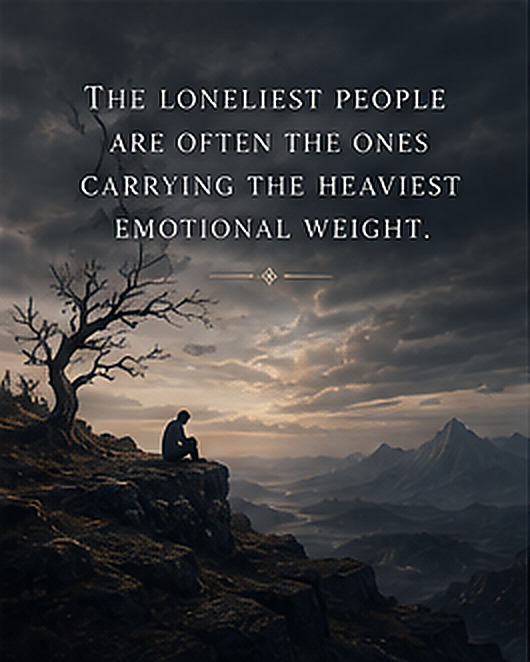
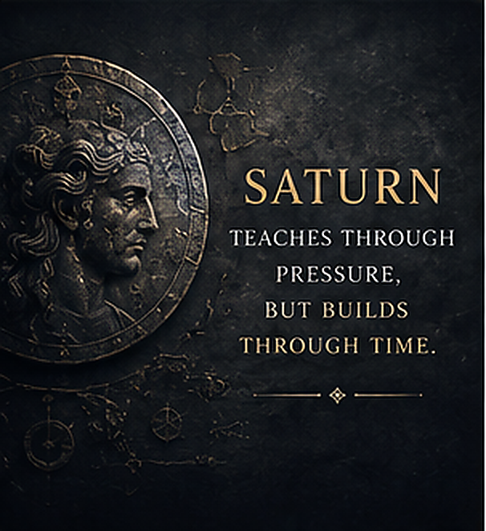
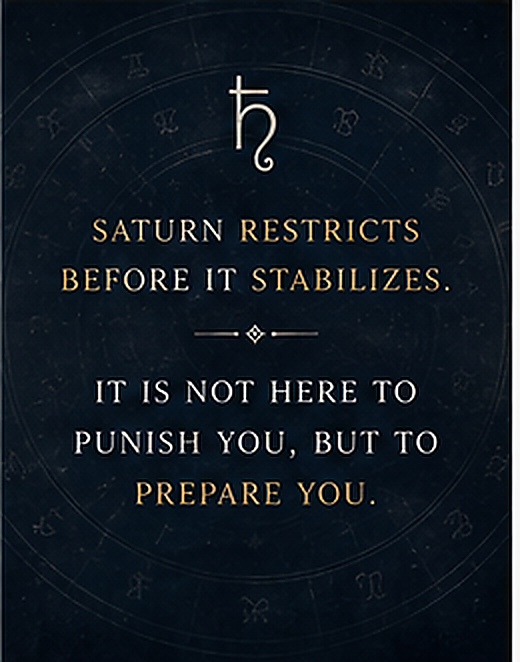
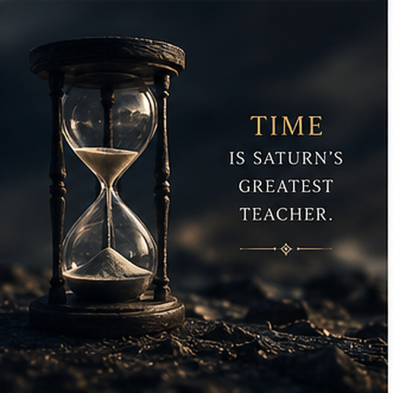
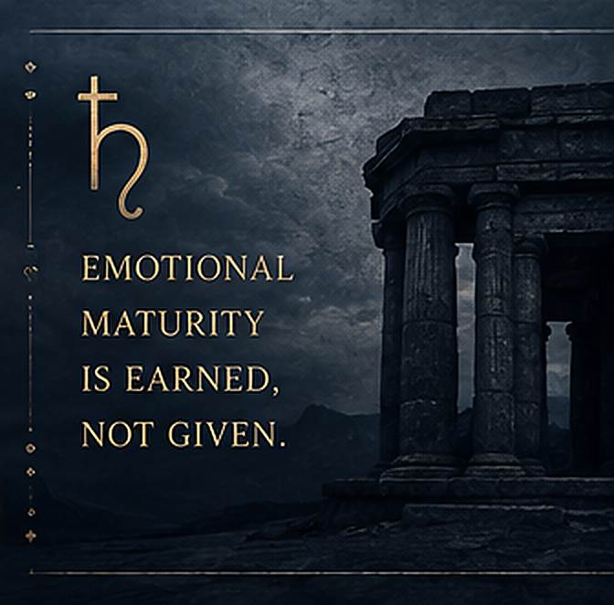
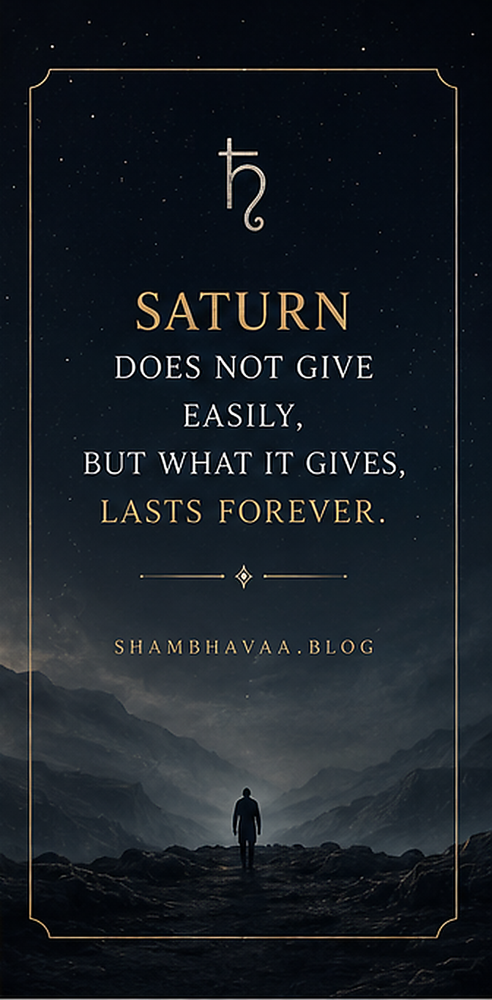

Quick Answer
Saturn creates emotional isolation by teaching self-containment, caution, endurance, and responsibility. The person may feel deeply but express slowly, making loneliness look like maturity from the outside.
Key Takeaways
- Saturn does not remove emotion; it compresses emotional expression.
- Saturnian people often learn early that vulnerability needs control and timing.
- The mature form of Saturn is stable intimacy, emotional responsibility, and trust built over time.
Some people feel emotionally alone for most of their lives without ever fully understanding why.
They are not always abandoned. They are not always unloved. Sometimes they are surrounded by family, friends, partners, and people who genuinely care about them.
And still, somewhere inside, there is distance.
A quiet separation.
A feeling that no one quite reaches the inner room where they actually live.
This is one of the clearest emotional signatures of strong Saturn influence.
Saturnian loneliness is rarely dramatic from the outside. It does not always look like isolation, collapse, or visible sadness. More often, it looks like self-control. It looks like maturity. It looks like someone who knows how to keep going.
That is what makes it so difficult to recognize.
Many Saturn-dominant people do not consciously think, "I am emotionally guarded." They usually think:
- "I handle things myself."
- "I do not like depending on people."
- "I am just realistic."
- "I do not express emotions easily."
- "People usually do not fully understand me anyway."
Over time, these statements stop being temporary coping mechanisms and become identity.
That identity is Saturn.

Saturn Does Not Remove Emotion
One of the biggest misunderstandings about Saturn is the idea that it creates emotionally cold people.
In reality, Saturn often creates emotionally deep people whose emotional expression has been restricted through life experience, fear, responsibility, and conditioning.
That difference matters.
A person with strong Saturn may feel rejection very deeply. They may love deeply, grieve deeply, fear abandonment deeply, and remember emotional pain for years.
But externally, they may appear:
- detached
- controlled
- emotionally flat
- serious
- calm
- difficult to read
The emotion is not absent. It is compressed.
Saturn does not always destroy feeling. It slows the movement of feeling. It makes emotional release difficult, especially when Saturn strongly influences the Moon, 4th house, Lagna, Venus, Cancer, or the Sun.
The person may feel everything, but the feeling has to pass through an internal wall before it reaches the outside world.
How Saturn Builds Emotional Inhibition
Saturn usually creates emotional restraint slowly.
It often begins in childhood, not always through one dramatic event, but through repeated experiences that teach the nervous system a painful lesson: emotional openness is not always safe.
The child gradually learns:
- emotions are inconvenient
- emotional needs create burden
- vulnerability creates risk
- dependence creates disappointment
- emotional openness may not be received gently
This may happen through emotionally unavailable parents, excessive criticism, conditional affection, unstable environments, premature responsibility, neglect, harsh discipline, or emotional invalidation.
The effect is cumulative.
Many Saturn-dominant people cannot point to one single moment and say, "That is when I changed." Instead, they slowly harden. They slowly stop expecting softness. They slowly learn that needing less feels safer than needing fully.
Emotional self-containment becomes protection.
Later in life, that protection becomes loneliness.

The Child Who Became Strong Too Early
Strong Saturn children often seem older than their age.
Not always wiser in the emotional sense, but burdened earlier. They may become responsible too young, self-controlled too early, exposed to seriousness prematurely, or forced into maturity before their emotional development has had time to unfold naturally.
Adults may praise them for being mature, disciplined, dependable, calm, or sensible.
But there is a hidden cost.
The child learns, "My role is to manage pressure, not receive emotional care."
This creates an imbalance that follows them into adulthood. The person becomes capable at enduring pain, functioning under pressure, and surviving emotional difficulty. But they may feel deeply uncomfortable with emotional receiving.
Support feels unfamiliar. Vulnerability feels risky. Asking for help feels like weakness. Expressing emotional need feels almost embarrassing.
Saturn teaches survival before softness.
And survival, when practiced for too long, can start to feel like personality.
Emotional Self-Protection
One of Saturn's strongest mechanisms is the anticipation of disappointment.
The Saturn-influenced person often expects rejection, distance, criticism, abandonment, misunderstanding, or loss before it has even happened. This expectation may not be conscious, but it shapes how they love, speak, trust, and withdraw.
Emotional openness begins to feel dangerous because the person is already preparing for pain.
This creates patterns such as:
- withdrawing emotionally under stress
- overthinking vulnerability
- avoiding emotional dependence
- suppressing needs
- minimizing feelings
- isolating instead of asking for support
Especially with Saturn-Moon, Saturn in the 4th house, Saturn aspecting the Moon, Saturn-Venus, or Saturn in Cancer, the person may carry a deep belief:
If I depend on someone emotionally, I will eventually suffer.
They may never say this directly.
But their behavior says it for them.

Why Saturn People Feel Misunderstood
Saturn creates internal emotional complexity and external emotional restraint.
That combination makes emotional communication difficult.
Inside, the person may be carrying sensitivity, fear, loneliness, exhaustion, longing, and a deep desire to be understood. Outside, they may communicate only a small percentage of it.
So people underestimate them.
They assume the Saturn person is fine because the Saturn person looks composed. They assume there is no need because the Saturn person rarely asks. They assume there is no pain because the Saturn person does not display pain openly.
Over time, this creates a painful emotional loop.
The native feels unseen, but also struggles to reveal themselves. They long for emotional understanding, but do not always know how to make themselves reachable.
This is one of Saturn's deepest wounds: the feeling that being understood is possible in theory, but difficult in real life.
Emotional Exhaustion Under Saturn
Saturn governs pressure over long durations.
Mars creates explosive stress. Rahu creates overstimulation. Saturn creates weight.
A Saturn-dominant person may live for years in endurance mode. The nervous system becomes used to holding tension, managing responsibility, expecting difficulty, and preparing for the next burden.
Over time this can create emotional fatigue.
The person may feel:
- emotionally heavy
- mentally tired without a clear reason
- unable to fully relax
- psychologically burdened
- disconnected from joy
- older than their age internally
During Saturn Mahadasha, Sade Sati, Saturn return, or major Saturn-Moon transits, this heaviness may become stronger. Life can feel slower, quieter, and more compressed.
Saturn removes excess stimulation so the native has to meet inner reality directly.
That confrontation can feel profoundly isolating.
Saturn and Self-Criticism
Strong Saturn people are often extremely hard on themselves.
Even when they are externally successful, they may still feel inadequate, behind in life, emotionally flawed, responsible for everything, or not good enough.
When Saturn influences the Sun, Moon, Lagna, or Mercury, the inner dialogue can become dominated by self-monitoring.
The mind keeps looking for:
- flaws
- risks
- mistakes
- unfinished responsibilities
- signs of weakness
- places where they should improve
This creates chronic psychological tension.
Even achievement may not create peace because Saturn immediately redirects the mind toward the next concern: "What still needs fixing?"
The person becomes disciplined, but rarely relaxed. Capable, but rarely carefree. Strong, but often tired.
Saturn in Relationships
Saturn changes the experience of intimacy.
Strong Saturn people usually do not approach love lightly. Attachment feels serious, heavy, meaningful, and consequential.
Especially with Saturn-Venus, Saturn in the 7th house, Saturn aspecting Venus, or Saturn-Moon combinations, the person may deeply desire closeness while also fearing dependence.
This creates an internal contradiction.
They may crave intimacy but fear vulnerability. They may care deeply but struggle to express affection naturally. They may want reassurance but feel uncomfortable asking for it. They may test emotional reliability without realizing they are doing it.
Their partner may feel, "They love me, but something is blocked."
Often, that blockage is fear.
Not lack of love.
The Saturn person may unconsciously associate love with responsibility, loss, sacrifice, pain, or emotional risk. So the heart opens slowly, carefully, and sometimes defensively.
Emotional Delay
Saturn develops emotional maturity slowly.
Strong Saturn individuals often trust slowly, heal slowly, soften slowly, and open gradually. This delay exists because Saturn values stability more than intensity.
Rahu wants stimulation. Venus wants sweetness. Mars wants movement.
Saturn wants durability.
It wants consistency, reliability, realism, structure, and emotional endurance. But before that stability develops, Saturn often creates loneliness first.
The person must confront fear, insecurity, dependency, vulnerability, and the habit of emotional self-protection before real intimacy becomes possible.
Saturn does not rush the heart.
It makes the heart prove what is safe.

When Isolation Becomes Identity
One of Saturn's most difficult patterns occurs when emotional isolation stops feeling painful and starts feeling normal.
The native becomes accustomed to carrying emotional weight alone. Over time, they may unconsciously stop expecting emotional support, understanding, comfort, or softness.
This creates excessive emotional self-reliance.
Externally, it looks strong.
Internally, it can become very lonely.
Human beings are not designed to process emotional existence entirely alone. Even strong people need tenderness. Even disciplined people need comfort. Even those who can survive without help still need to feel emotionally held sometimes.
Saturn forgets this when it is unevolved.
Evolved Saturn remembers it without losing strength.
Saturn's Hidden Wisdom
Despite its heaviness, Saturn carries extraordinary psychological depth.
Saturn creates endurance, resilience, emotional realism, maturity, patience, self-awareness, and psychological strength.
Many emotionally wise people have powerful Saturn influence because Saturn forces them to meet reality repeatedly. It removes illusion slowly. Painfully. Honestly.
That is why evolved Saturn individuals often become deeply grounded. They may develop strong boundaries, loyalty, calm wisdom, emotional reliability, and a rare ability to sit with difficulty without running from it.
Their emotional understanding becomes profound because it was earned under pressure.
Saturn does not give easy wisdom.
It gives earned wisdom.

Healing Saturn Energy
Healing Saturn does not mean becoming emotionally impulsive.
It means learning emotional openness without feeling unsafe.
For Saturn-dominant people, this is not simple. Vulnerability may feel like danger because the nervous system has learned to associate openness with disappointment or pain.
Healing usually requires:
- reducing self-criticism
- allowing emotional receiving
- regulating the nervous system
- practicing emotional honesty
- choosing safe relationships
- building self-compassion
- learning softness gradually
The deepest Saturn healing occurs when the native realizes that strength and vulnerability are not opposites.
Real maturity is not emotional suppression.
It is emotional stability without emotional shutdown.

Key Takeaways
- Emotional Self-Containment: Saturn doesn't remove feelings; it compresses their expression for protection.
- The Child Who Grew Too Fast: Early responsibility often creates adults who struggle to receive emotional support.
- Anticipatory Rejection: Saturn-dominant people often expect disappointment, leading to emotional withdrawal.
- Earned Maturity: The weight of Saturn eventually transforms into profound, grounded wisdom and reliability.
FAQ: Navigating Saturn's Isolation
Does Saturn make a person cold or emotionless?
No. Saturn creates a barrier between internal feeling and external expression. The person often feels deeply but struggles to find a safe way to reveal those feelings without fear of rejection or burdening others.
How can I balance a heavy Saturn placement?
Balance comes through practicing "vulnerability in safety." This means finding trusted spaces to slowly lower emotional guards and realizing that needing others is a sign of human maturity, not weakness.
Is Saturn's loneliness permanent?
It often feels that way during certain life cycles (like Sade Sati), but it is not permanent. It is a season designed to force self-reliance. Once the lesson is learned, Saturn allows for much deeper, more durable connections.
The Dance of Desire and Restraint
Saturn’s restrictive energy is often the corrective force for the obsessive cravings of Rahu. While Saturn builds walls to protect the heart, Rahu attempts to break through boundaries to satisfy hunger. Understanding this axis is key to psychological balance. Explore the other side of this cosmic coin in our guide: [Why Rahu Makes You Obsessive](/rahu/why-rahu-makes-you-obsessive).
Final Thoughts
Saturn creates emotional isolation because it compresses emotional expression until psychological maturity develops.
The native often learns endurance before softness, restraint before openness, and responsibility before emotional ease.
This creates emotionally strong people.
But it can also create emotionally lonely people.
Eventually Saturn teaches its deepest lesson:
Isolation may protect the heart temporarily, but healing begins when the person finally feels safe enough to stop carrying emotional existence alone.
Common Questions
Why do Saturn-dominant people seem distant?
They often protect sensitivity behind restraint. The distance is usually a learned safety pattern, not proof that they lack feeling.
Does Saturn always delay relationships?
Saturn can delay, test, or mature relationships. Its goal is not denial alone but stability, responsibility, and emotional realism.
Which combinations intensify emotional isolation?
Saturn with the Moon, Venus, Lagna, 4th house, 7th house, Cancer, or major Saturn dasha/transit periods can make isolation themes stronger.